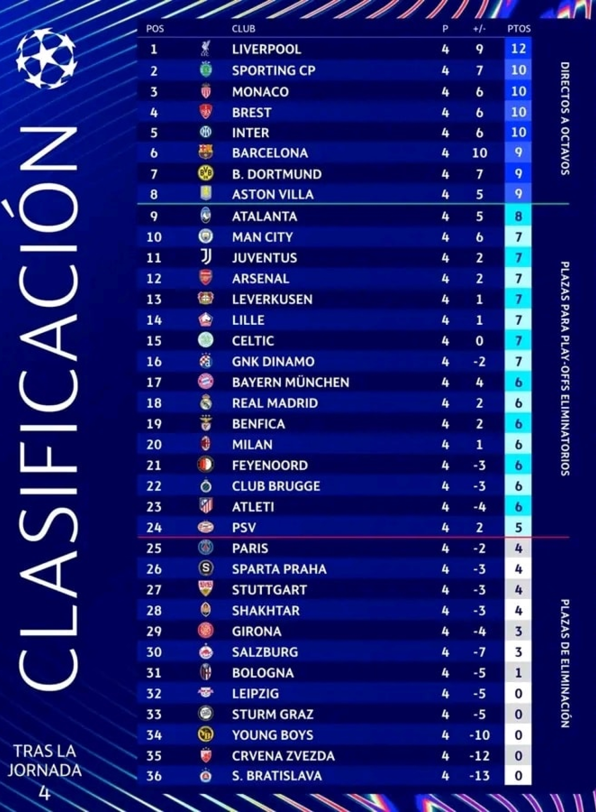

La Champions League estrena un nuevo formato en esta temporada. Los 36
equipos juegan ocho partidos y se ubican en una tabla única de posiciones.
Los clubes ubicados del primer al octavo puesto se clasifican directamente
a los octavos de final, los que queden del puesto 9 al 24 jugarán una fase
previa de 'playoffs', y el resto quedarán eliminados completamente de
competencias internacionales.
Revise la tabla única de posiciones, las fechas y los horarios de los
partidos y los goleadores de esta edición:
Actual tabla de posiciones
